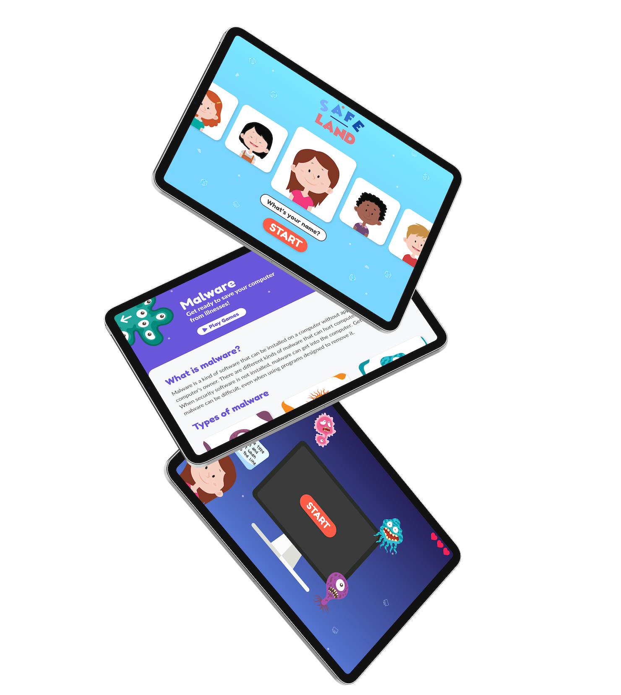
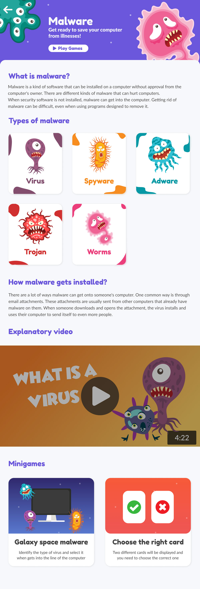
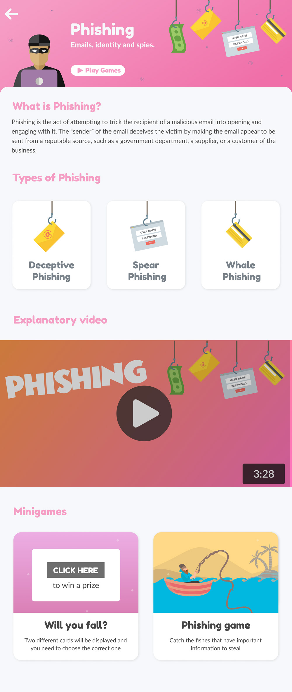
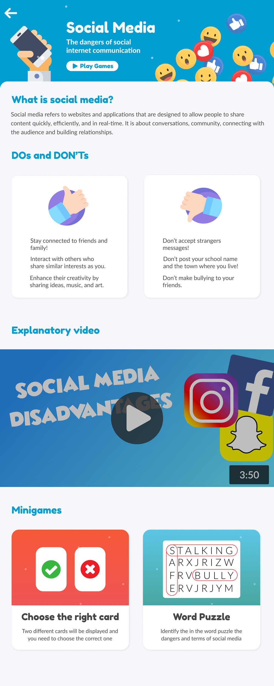
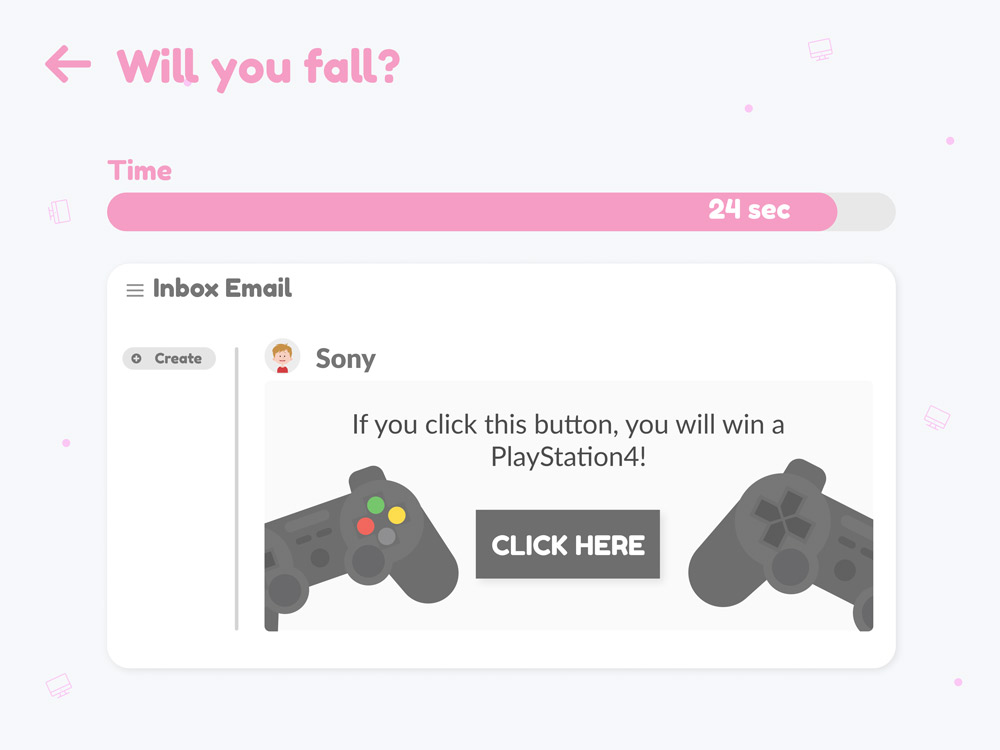
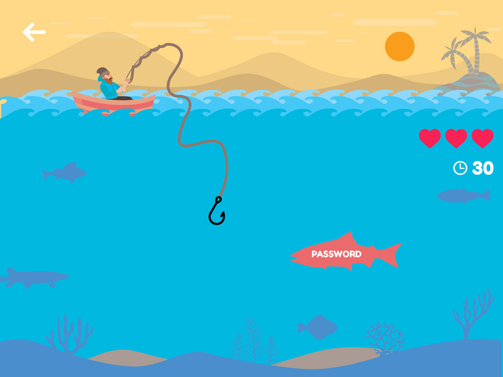
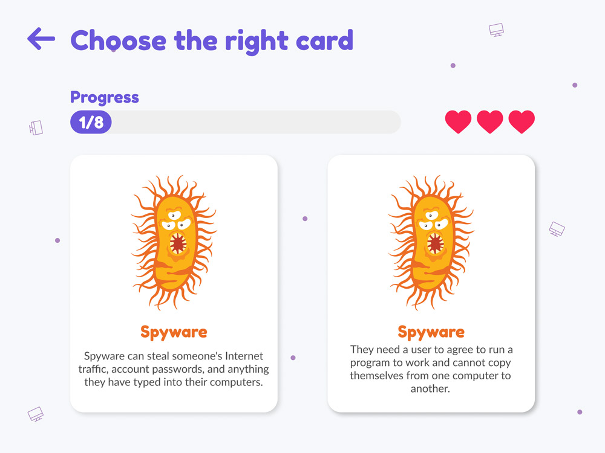
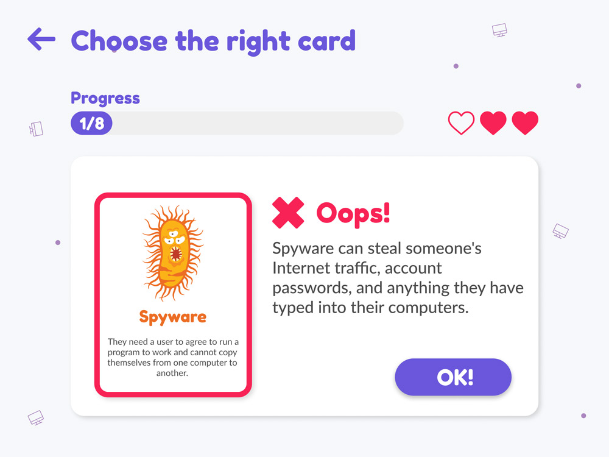
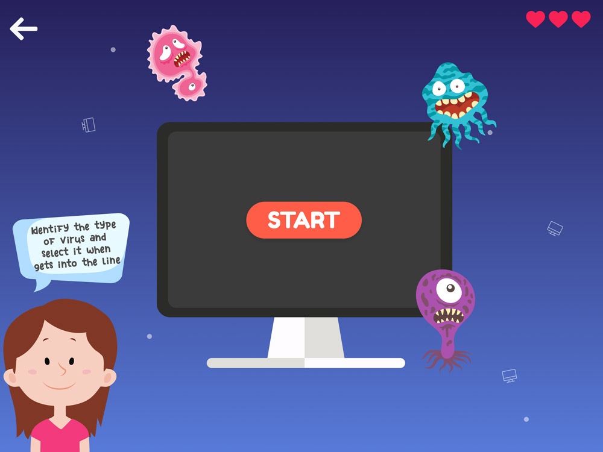
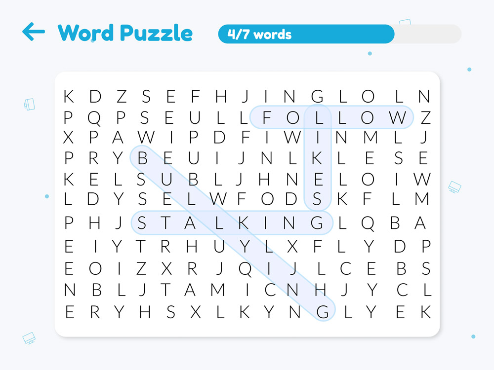

Teaching children to spot the trap
SafeLand is an iPad platform that teaches children the basics of cybersecurity. Lessons, videos and minigames, built to be used in class with a teacher, or at home with a parent.

The work
Built at Hack Junction. Tablets were becoming normal in classrooms, so the classroom was where the app went, with the lessons organised in categories a teacher could pick from.
- Client
- Hack Junction
- Date
- November 2018
- Role
- Conception and UI design
- Team
- With Yerai and Maria
The challenge
Security in a connected world matters to all of us. The threats are everywhere and we are all targets. It is easy to fall for a scam and make a bad decision: a bad website, a malicious app, personal information handed over without thinking about it.
Children are a hard audience to design for. They need the usability and the engagement to be exemplary, and they will not forgive either one. The aim was to strengthen their resilience against these threats through awareness.
What works with kids works with all of us.
The premise of the briefThe lessons
Each topic is introduced in language a child can follow, which means a parent with moderate IT knowledge can follow it too. The same shape every time: what it is, the kinds of it there are, a short video, then the games.



The minigames
At the end of every lesson come games built on that lesson's topic, so what was just explained has to be used before it is forgotten. Each one puts the child on the receiving end of the threat rather than reading about it.





